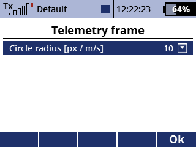
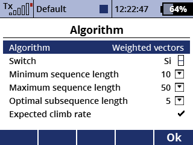
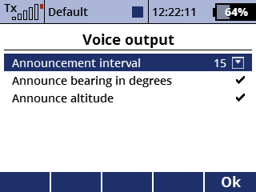
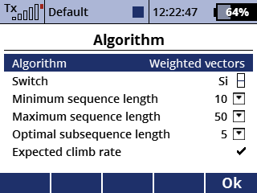
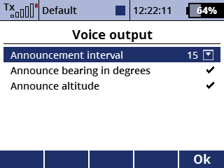

Beispiel: 'Gewichtete Vektoren' vs 'Beste Teilsequenz'
Hilft in der Thermik den besten Punkt zum Kreisen zu finden. Dazu werden eine Visualisierung und eine Sprachausgabe genutzt.
Inspiriert durch ein System, das für manntragende Flugzeuge entwickelt wurde, hilft diese App dabei den optimalen Punkt zum Kreisen zu finden. Eine regelmäßige Sprachausgabe gibt die Richtung und Entfernung zu dem Punkt aus, wohin der Kreismittelpunkt verlagert werden sollte.
Dazu werden ein GPS-Sensor sowie ein Variometer oder ein Höhensensor benötigt.

Beispiel: 'Gewichtete Vektoren' vs 'Beste Teilsequenz'
Die GPS-Position und die Steigraten werden in regelmäßigen Abständen abgefragt.
Jeder dieser Punkte wird in einem Telemetriefenster als ein Kreis angezeigt, dessen Radius proportional zu der dortigen Steigrate ist, falls diese positiv ist.
Die Flugbahn wird zu jeder Zeit soweit gekürzt, sodass sie eine Krümmung von höchstens 360° enthält, also immer nur den letzen Kreis beschreibt.
Abhängig von den Steigraten entlang der Flugbahn und dem gewählten Auswertungsalgorithmus wird dann der optimale Punkt berechnet.
Die Ansage enthält die Richtung und Entfernung zum diesem Punkt, relativ zum Mittelpunkt des letzen Kreises. Falls bekannt, wird auch die dort erwartete Steigrate ausgegeben.
Zum Beispiel empfiehlt die Ansage "85° 20m 2m/s" eine Verschiebung um 20 Meter nach Osten, wo ein Steigen von 2 m/s zu erwarten ist.
Der optimale Punkt wird immer als ein Quadrat dargestellt. Ist die dortige Steigrate bekannt, wird dessen Größe analog zu den Kreisradien bestimmt.
Die App bietet aktuell drei verschiedene Auswertungsalgorithmen, welche alle ein eigenes ideales Anwendungsszenario besitzen. Die folgende Liste ist nur eine kurze Übersicht, eine sehr detaillierte Beschreibung ist hier zu finden.
Beste Teilsequenz: Berechnet die Summe der Steigraten über alle Teilsequenzen der Flugbahn mit der eingestellten Länge.
Dann wird der mittlere Punkt der Teilsequenz zurückgegeben, die insgesamt die höchste Summe aufweist.
Gewichtete Vektoren: Interpretiert die Abweichung eines GPS-Punktes vom Kreismittelpunkt als ein Vektor und multipliziert ihn mit einem Gewicht, das proportional zu der Steigrate an diesem Punkt ist. Die Summe über alle diese Vektoren zeigt dann auf den optimalen Punkt.
Gewichtete Vektoren [Bias]: Ist dem zweiten Algorithmus sehr ähnlich, aber empfiehlt nicht so aggressive Verlagerungen.

 



Switch: Die Sprachansage und das Aufnehmen neuer Messpunkte werden deaktiviert, wenn hier ein Schalter ausgewählt ist und sich dieser in der Aus-Position befindet.
Messintervall: Das Intervall [ms], in dem neue Messpunkte gelesen werden.
Ansageintervall: Das Intervall [s], in dem die empohlene Verlagerung angesagt wird.
Suchmodus umschalten: Dieser Schalter schaltet den Suchmodus ein. In diesem Modus wird der Flugweg nicht mehr auf einen Kreis begrenzt und die Sprachansage nutzt anstelle des Mittelpunkts nun die aktuelle Position als Bezugspunkt.
Im Suchmodus immer Algorithmus 1 nutzen: Wenn dies ausgewählt ist, wird im Suchmodus immer der Beste-Teilsequenz Algorithmus genutzt, da dieser zum suchen am besten geeignet ist.
Verzögerung: Fügt eine künstliche Verzögerung hinzu, um das häufig stark verzögerte Verhalten von Varios zu kompensieren.
Länge, Breite, Vario EX, Höhe EX: Auswahl der entsprechenden Sensoren.
Modus: Die App bietet die Modi 'Vario' und 'Höhendifferenz'. Wenn letzteres ausgewählt ist, wird eine Steigrate immer als die Differenz von aktueller und zuletzt gemessener Höhe berechnet.
Algorithmus Switch: Mit diesem Schalter kann der Auswertungsalgorithmus geändert werden. Wenn kein Schalter zugewiesen ist, kann die Auswahl manuell getroffen werden.
Minimale Sequenzlänge: Die minimale Anzahl von erforderlichen Datenpunkten, damit die Sprachansage aktiv ist.
Maximale Sequenzlänge: Oberes Limit für die Anzahl von Datenpunkten. Verhindert eine sehr große Anzahl von Punkten, wenn die Flugbahn keinen vollständigen Kreis enthält.
Länge optimale Teilsequenz: Länge der Teilsequenzen, die der Algorithmus 'Beste Teilsequenz' betrachtet. Je größer dieser Wert ist, desto großflächiger muss ein steigendes Gebiet sein, um als beste Teilsequenz gewählt zu werden.
Erwartetes Steigen: Wenn dies ausgewählt ist, versucht die App das erwartete Steigen am optimalen Punkt zu bestimmen. Dieser Wert wird dann mit der Sprachausgabe angesagt und beeinflusst zudem die Größe des optimalen Punktes in der Darstellung.
Zoom: Ein [proportionaler] Geber für manuellen Zoom im Telemetriefenster. Wenn kein Geber gewählt ist oder der Geber in der geringsten Position ist, wird der automatische Zoom aktiviert. Automatischer Zoom ist die größtmögliche Zoomstufe, bei der alle Punkte auf dem Bildschirm sind.
Kreisradius: Der Radius der Kreise im Telemetriefenster wird berechnet als das Produkt aus dieser Zahl und der jeweiligen Steigrate.
Zoombereich: Der Bereich von Zoomstufen, die mit dem Zoom-Geber erreicht werden können.